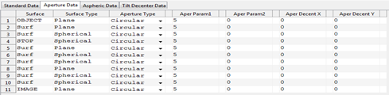
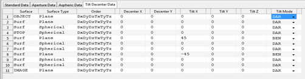

Surface Editor Panel
It is part of the main panel of the parent window and contains spreadsheet like data editors for entering and editing the surface data of an optical system.

It is organized in to different tabs: Standard data, Aperture Data, Aspheric Data, and Tilt and Decenter Data. Each of the tabs are discussed below.
1. Standard Data
It contains surface data which are required for conventional optical systems.

Column Header |
Description |
Remarks |
Surface |
Used to indicate the surface index or whether the surface is object or, image or stop surface or not. |
Object and image surfaces are always the first and the last surfaces of the system. To make a surface a stop, type “s” or “stop” in the surface column. Any text inputs other than “s” or “stop” will be rejected by the system |
Name/Comment |
To enter name and notes related to the surface. |
Any text inputs are accepted and it has no real functional significance. |
Surface Type |
A pop up menu to choose the type of surface. |
Currently Plane, Spherical, and Conic Aspherical surfaces are functional. Other surface types are to be included in the future. |
Radius |
Used to input the radius of curvature of the surface. The unit of the number will be that specified in the “System Configuration” window. |
All numeric values including 0 and Inf are accepted by the system. Other inputs are not allowed. The surface type and radius fields are interlinked and changing one automatically affects the other. For instance, selecting plane surface for the surface type automatically sets the radius to infinity. And changing the radius to some finite value changes the surface type to Spherical if it is Plane. |
Thickness |
To enter the thickness the medium that follows the current surface. The unit of the number will be that specified in the “System Configuration” window. |
All numeric values including 0 and Inf are accepted by the system. Other inputs are not allowed. But entering Inf thickness for surfaces other than the object surface and the last surface of the system will result in an invalid optical system. |
Glass |
To enter the glass name or the refractive index of the medium that follows the current surface. |
Any number value is treated as refractive index of the medium. And any non-numerical text will be treated as the name of the glass from glass catalogue. If the glass name entered exists in the catalogue, it will be confirmed by changing the entered text to upper case. If the system fails to find the glass name entered then, the Glass data editor window will automatically appear to enable user select or enter the new glass. |
Deviation Mode |
Pop up menu used to indicate the surface as reflective (-1) or refractive (+1). |
|
Semi diameter |
Define the semi diameter of the surface. |
This is linked with the surface aperture definition spreadsheet. If the surface aperture type is “None” and some value is entered for semi diameter then, the aperture type will automatically be changed to circular with radius equal to the semi diameter entered. But if the surface has its aperture defined, then the semi diameter will only be used to plot the surface and not for aperture calculations. |
Coating |
Name of coating used. "None" for bare glass. |
Any non-numerical text will be treated as the name of the glass from coating catalogue. If the coating name entered exists in the catalogue, it will be confirmed by changing the entered text to upper case. If the system fails to find the coating name entered then, the Coating data editor window will automatically appear to enable user select or enter the new coating. |
Notes:
Unlike most optical design softwares, the object surface is considered to be the first surface in the toolbox. This is follows from the fact that indexing begins from index 1 in Matlab.
2. Aperture Data
It contains data defining surface apertures.

Column Header |
Description |
Remarks |
Surface |
See “standard data” sheet |
Just repeated from standard data entry sheet for surface identification. |
Surface Type |
See “standard data” sheet |
Just repeated from standard data entry sheet for surface identification. |
Aperture Type |
Pop up menu to select the type of aperture used for the surface |
Currently “Circular” , "Elliptical"and “Rectangular” aperture shapes are functional. Others are left for future versions. |
Aperture Param 1 |
Aperture Parameter |
Only positive numerical values are allowed. It has different purpose for different aperture types. Radius for circular aperture and x side length for rectangular. |
Aperture Param 2 |
Aperture Parameter |
Only positive numerical values are allowed. Not applied for circular and y side length for rectangular. |
Aper Decenter X |
Aperture Decenter in X |
Not functional |
Aper Decenter Y |
Aperture Decenter in Y |
Not functional |
3. Aspheric Data
It contains data defining aspherical surfaces such as aspheric constants and polynomial coefficients.

Column Header |
Description |
Remarks |
Surface |
See “standard data” sheet |
Just repeated from standard data entry sheet for surface identification. |
Surface Type |
See “standard data” sheet |
Just repeated from standard data entry sheet for surface identification. |
Conic |
To enter the conic constant of the surface. |
This is used for surface types indicated to be aspherical in the standard data entry. If the surface type is not aspheric then the conic constant will automatically be 0. |
A1…A12 |
Polynomial Coefficients |
Not functional |
4. Tilt and Decenter Data
It includes tilt and decenter parameters of the surfaces.

Column Header |
Description |
Remarks |
Surface |
See “standard data” sheet |
Just repeated from standard data entry sheet for surface identification. |
Surface Type |
See “standard data” sheet |
Just repeated from standard data entry sheet for surface identification. |
Order |
Order in which tilt and decenter are performed. |
All the tilt and decenter operations shall be listed otherwise it will be invalid. |
Decenter X,Y |
Surface decenter in X and Y coordinate |
Non infinite numeric values are allowed. |
Tilt X,Y,Z |
Tilt angle (in deg) about the corresponding axes. |
Currently they are used as successive rotation angles in degrees. |
Tilt Mode |
Pop up menu for selecting the mode of the tilt determining the reference coordinate axis after the current surface. |
Created with the Personal Edition of HelpNDoc: Easy EBook and documentation generator